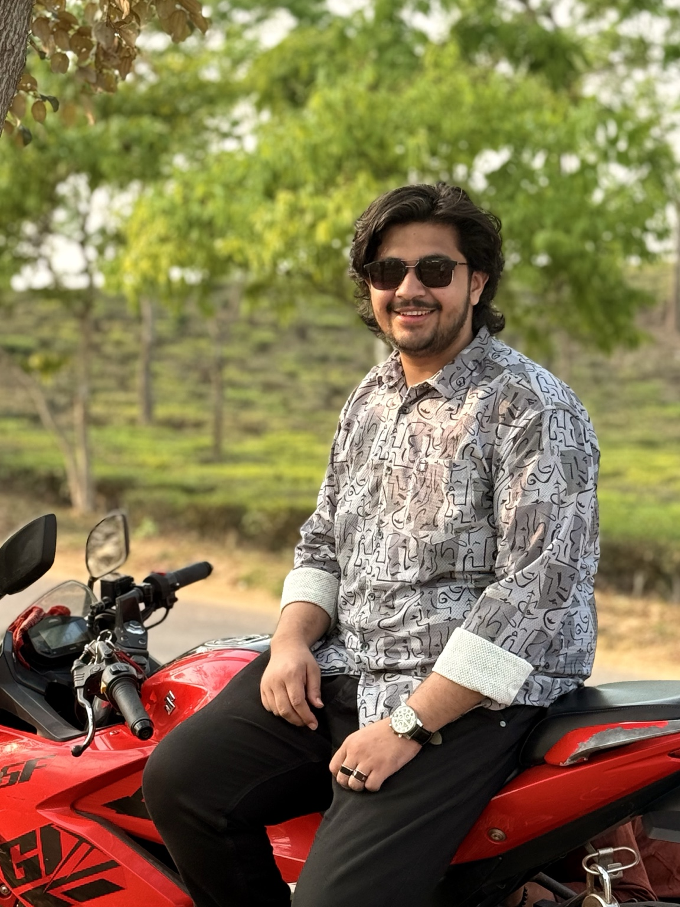

About me
I am a student with an interest in programming and business. I want to keep learning and develop my skills for the future.
I am a student pursuing a B.Sc. in Computer Science and Engineering. I aspire to become a good programmer and a successful businessperson.

I am a student with an interest in programming and business. I want to keep learning and develop my skills for the future.